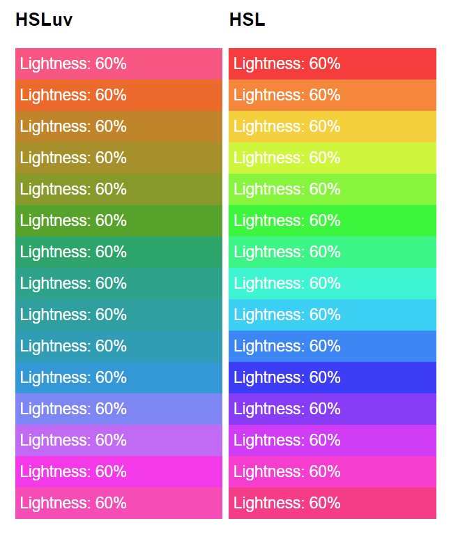

hsluv_ts
An HSLuv implementation in typescript, ported from the definitive reference Haxe version.

Generated library documentation
This implementation passed the author's 24,000 tests. By comparison to the reference implementation, calculations are accurate to within 1 in 1015, which the author says is fine.
This implementation provides .d.ts for Typescript, es6 native tree-shakeable
for most work, es6 commonjs bundled for quick work, es6 iife for in-browser
learning and debugging, and es6 iife minified for bandwidth-sensitive
prepackaged deployment like CDNs. main refers to es6 cjs, and module
refers to es6 native tree-shakeable.
This implementation is CI tested under Node 8,12,13 on Windows, Mac, and Ubuntu.
What is this?
Chances are you already know what HSLuv (formerly aka HuSL) is if you're
here, but if not, HSLuv is a color scale meant to be easy for humans to
interpret. This package primarily exists to implement
two color spaces: HSLuv and HPLuv. However, in the process, we also
implement transformations for rgb in numeric, rgb in hex strings, hsl,
xyz, luv, and lch, as well as the lightness to y channel transform in
both directions.
Wait, are there two of these?
I made this because Typescript wasn't on the author's somewhat extensive
language list, and because the Haxe tooling wasn't very convenient under
rollup. When I was done and tried to publish, I realized someone else
already had done this, and even used
the same name I did; it was just missing from the author's list.
However, my approach to typing, packaging, and tooling is mildly different than theirs, so I'm gonna publish anyway. Besides, it's already finished (sigh 😞,) and I like some of the differences in mine between these two projects.
HSLuv
What's interesting about HSLuv is that the apparent brightness is normalized.
If you've tried to pick color palettes in the regular HSL space, you've
probably noticed that at the same lightness, the colors in the blue end of the
hue appear far darker than the colors in the yellow end.
HSLuv fixes that. For any given hue, the apparent brightness of a given
lightness is meant to be simiar (using a whole bunch of complicated math and
human measurement.)
From Alexei's page,
HPLuv
The downside of HSLuv is that there are colors it can't represent. There is
no blue with the apparent brightness of canary yellow.
HPLuv makes these work by sacrificing saturation correctness. HPLuv will
always produce a color, but sometimes a less satisfying one than HSLuv.
How to use
npm install --save-dev hsluv_tsimport { hsluv_to_hex, hsluv_to_rgb, hex_to_hsluv } from 'hsluv_ts';
console.log( hsluv_to_hex([ 250, 50, 50 ]) );
// prints "#5c78a5"
console.log( hsluv_to_rgb([ 250, 50, 50 ]) );
// prints [ 0.35957778969721066, 0.4708793745621595, 0.6462180065016022 ]
console.log( hex_to_hsluv('#5c78a5') );
// prints [ 250.2650513570262, 49.70313649414815, 50.00687151772391 ]API
The following functions are exposed.
All functions take two arguments, according to the types in their names.
rgb_to_hsluvrgb_to_hpluvhsluv_to_rgbhpluv_to_rgbhex_to_hsluvhex_to_hpluvhsluv_to_hexhpluv_to_hexlch_to_hsluvlch_to_hpluvhsluv_to_lchhpluv_to_lchrgb_to_xyzxyz_to_rgbrgb_to_lchlch_to_rgbluv_to_xyzxyz_to_luvluv_to_lchlch_to_luvl_to_yy_to_lhex_to_rgb
API Types
landyarenumbers.hexis a seven-characterstringstarting with#.- The library consumes upper and lower case, but produces lower case.
hslandhplare a tuple (array) of range[0;360],[0;100],[0;100]rgbis a tuple of range[0;1],[0;1],[0;1]xyz,lch, andluvare a tuple of three unbounded signednumbers
Changes
- Typescript.
- Names are now in
snake_caseinstead ofcamelCase. - Many tests were added in the name of code coverage.
- CI under Github Actions